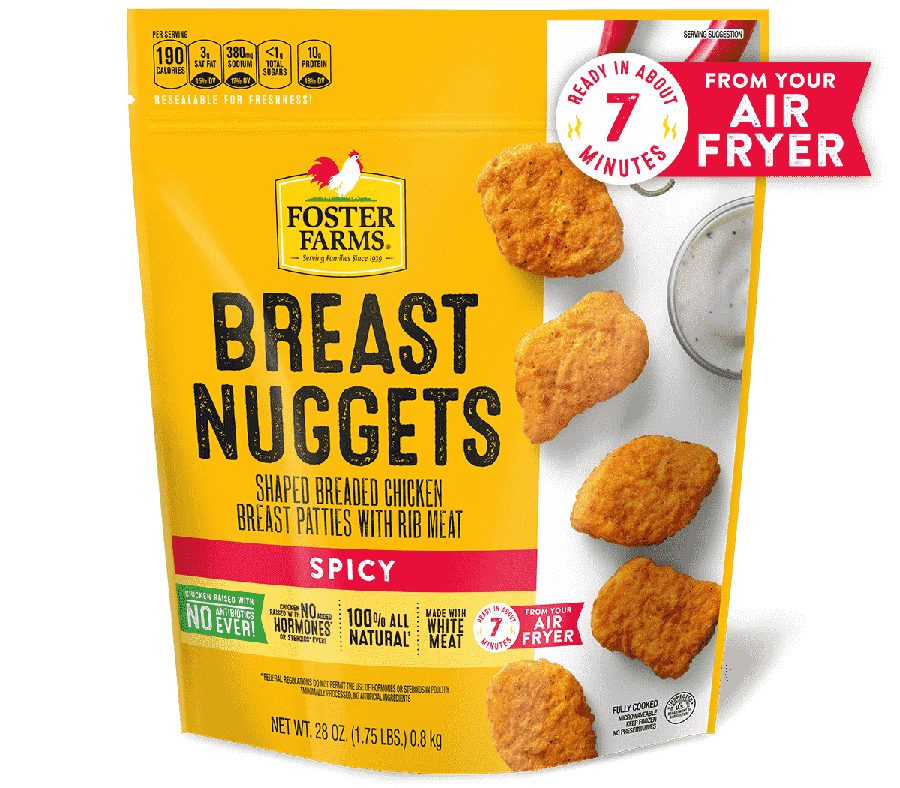
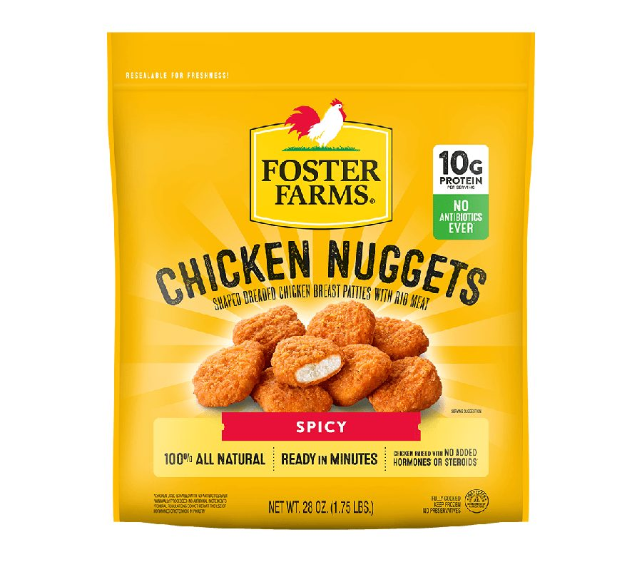
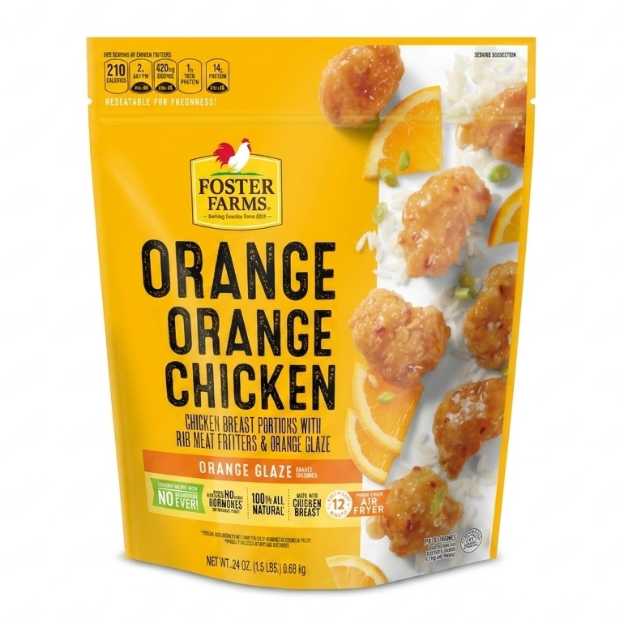
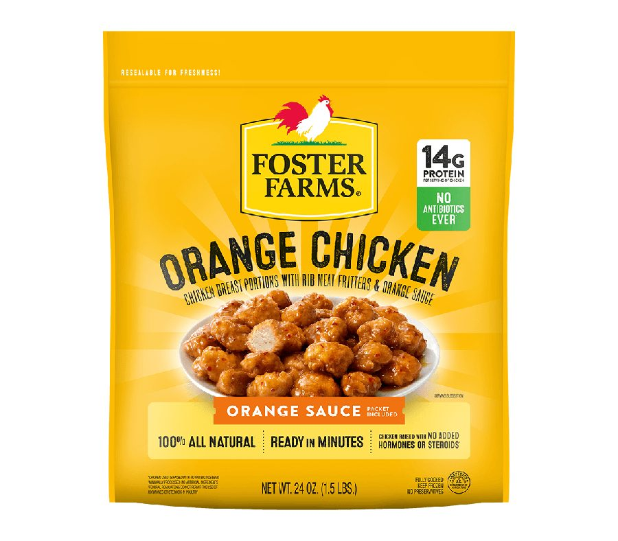

Foster Farms Head of Marketing In market now
Own the yellow. Then own the shelf.
Foster Farms had the strongest colour equity in its frozen set and a front panel that kept giving half of it to a white photography field. I rebuilt the panel as a five-zone system, promoted the two claims that decide the category, and rolled the structure across the line.
fixed across every SKU
a must-have claim
a must-have claim
against inventory
Claim figures from the July 2025 category claims analysis. The redesign is in market now, so post-launch results are not yet available.
Foster Farms owns yellow in the freezer and was giving half of it away.
This was a system problem, not a SKU problem. I rebuilt the front panel as a repeatable structure and rolled it across the line.
The prior system split the front panel down the middle. Product photography sat on a white field on the right, which cut the yellow brand block roughly in half and pushed the logo into the top left corner at a size that stopped working from a few feet away. Claims were spread across a crowded strip at the bottom, each one competing with the one beside it.
Every SKU also solved variant naming its own way. There was no single device that told a shopper which flavour they had picked up, so the line worked SKU by SKU instead of as a block.
Colour is the first thing a shopper resolves at distance, before a logo, a name or a claim. A brand block only works if it is a block.
The design principle behind the rebuild
In frozen fully cooked chicken, two claims decide the purchase.
Protein and no antibiotics are not nice-to-have callouts in this category. They are the two questions the shopper is answering at the freezer door.
One front-panel system, applied across the line.
Five zones, fixed positions, one flavour device. Every SKU inherits the same structure.
Why zones. A shopper reads a frozen bag in a fixed sequence at decreasing distance: colour, then brand, then what it is, then which one. Fixing each answer to a zone means every SKU in the line teaches the shopper how to read the next one. It also means a new flavour is a ticket colour and a product shot, not a new layout.
What changed on the front panel, and why.

- White photography field takes the right third and breaks the yellow block.
- Logo sits small and off-centre at the top.
- Named “Breast Nuggets”, which is not the word the shopper is looking for.
- Six secondary claims crowd a single strip with no space between them.
- Nutrition panel copy runs across the top edge and competes with the logo.
- Product floats loose against white with no depth or light.

- Yellow runs edge to edge. The brand block is a block again.
- Logo enlarged and centred as the first thing read at distance.
- Renamed “Chicken Nuggets”, the word shoppers actually use.
- Protein and No Antibiotics Ever fixed as a stacked badge, top right.
- Radiant light behind the food so the product reads as the hero.
- Three secondary claims on one rule with space to be read.
Left: prior production art. Note that this render carries an air fryer banner that is not on the shelf pack. Right: the redesigned front panel now rolling into market.

- Same split-panel structure, solved differently again.
- No shared variant device linking it to the rest of the line.
- Claims and callouts sit in different places than on the nugget bag.

- Identical five-zone structure, inherited without redrawing.
- Same badge stack, with the protein figure updated to 14g.
- Ticket carries “Orange Sauce” in the flavour’s own colour.
- Two SKUs that now read as one line at ten feet.
The same system applied to a second SKU. This is the test of a front-panel architecture: the second product should cost a colour decision, not a design project.
| The change | The evidence behind it | Intended commercial effect |
|---|---|---|
| Enlarged the logo and let yellow run edge to edge | Colour resolves before type at shelf distance, and 63% of shoppers rate ease of finding the product in store as extremely or very important. FR | Builds a brand block that holds the eye across a full set of facings and makes the line easier to find from the end of the aisle. |
| Fixed protein and No Antibiotics Ever as a badge stack | High protein is the top claim in the category at 47% must-have. No antibiotics ever at 39% is the point of difference against other frozen fully cooked chicken. CL | Answers the two purchase questions in the same place on every SKU, which is what makes a claim learnable rather than just present. |
| Built one flavour ticket, colour-coded by variant | Product form and variant are what the shopper is selecting once brand is settled. Form ranks fifth of ten attributes overall and higher for engaged buyers. FR | Cuts the time to pick the right variant and removes the wrong-flavour purchases that damage repeat. A new flavour becomes a colour, not a redesign. |
| Renamed the product to match how people search for it | Over 70% of shoppers write or say only “chicken” or the type of chicken when planning a trip. Search behaviour follows the same words. FR | Matches the pack to the words in the shopper’s head and to the terms they type. “Breast Nuggets” is a manufacturing description. “Chicken Nuggets” is what someone came to buy, on shelf and online. |
| Put radiant light behind the product | In consumer testing on a comparable frozen fully cooked line, “it looked tasty or delicious” was the first-cited reason to buy at 45 to 57%. Appetite appeal is the trigger, claims are the permission. BB | Gives the food depth and separation so it carries at distance, and makes the appetite cue and the brand colour work together instead of competing. |
| Gave secondary claims room | Claims read as a set only when they are spaced as a set. A crowded strip reads as fine print and gets skipped. | Three claims that get read beat six that do not, and it holds the panel open for retailer-specific callouts later. |
Rolling into market now. What I will read.
The redesign is phasing into market as existing inventory clears, so there is no post-launch read yet. These are the measures the work was designed against, set before launch.
- 01
Findability at shelf
The primary objective. Time to locate the brand block in a competitive frozen set, tested the same way the Just Bare rebuild was tested, where the naming and claim rebuild returned an 83% findability gain.
- 02
Dollar velocity in distributed accounts
The commercial read, held against the same accounts pre and post so distribution changes do not flatter the number.
- 03
Unaided brand block recognition
Whether shoppers can identify the brand from colour alone at distance. This is the test of the decision to own yellow.
- 04
Claim playback
Whether protein and no antibiotics are what shoppers repeat after exposure. If they are not, the badge stack is in the wrong place or the wrong size.
- 05
Variant error rate
Whether the ticket reduces wrong-flavour purchases. This shows up in repeat, not in trial.
What I owned.
Set the brief from the category research and decided the front panel had to be rebuilt as a system rather than SKU by SKU.
Simplified product naming to the words shoppers use, and set the variant naming convention.
Directed execution across the line, set the five-zone structure, approved final art.
Briefed and approved the photography, including the lighting treatment that had to carry at shelf distance.
Phased the changeover against existing product inventory so the line converts without writing off stock.